Data Cafe: Designing the Backstage of AI
AI is only as good as the data you feed it. At EA, I designed a self-serve onboarding system that guides game teams to give their data meaning, so the AI tools built on top of it give answers people can trust.
Data Cafe is EA's data context platform, the source of truth for discovering, governing and using trusted data across every team and title. As game teams started plugging AI into their work, the AI tools at their disposal kept giving unreliable analysis. The problem wasn't the model. It was messy, undocumented data with no definitions, no metadata and no shared language.
The obvious fix was a cleaner onboarding screen. But a team building FC works nothing like a team building Battlefield. So instead of just improving the UX of our data product, I designed the system behind it: a lightweight pipeline that meets teams in the tools they already use and makes adding context part of their normal day, not an extra chore.
Garbage In, Garbage Out: Finding the Real Problem
I started by listening. Across 71 user interviews and a survey of 24 people, one pattern kept showing up: demand for Data Cafe was high, but teams weren't ready. Nobody enjoys structuring data or writing context for it. It's tedious, and it takes forever. Meanwhile, every request to build a data catalog or onboard a new team lived in scattered Slack threads, long email chains and a lot of one-on-one handholding.
"Provide data inventory, glossary/definitions, and searchable metadata so analysts can locate tables and metrics fast… enable users to ask agents, 'where did this metric come from?'"CRM Engineering · Voice of the Customer
The insight that changed the project: data readiness was the number one bottleneck, and the teams that succeeded were the ones that got guided onboarding. The answer wasn't another interface. It was making that guidance self-serve.
The Reframe: Designing the System, Not Just the Screen
I treated workflows and integrations as my design canvas. Each decision moved a manual, invisible step into a guided one that lives where teams already work.
Meeting Every Team Where They Are
Because every team starts from a different place, I designed a conditional readiness flow instead of a one-size-fits-all checklist. Producers pick the journey that describes where they are today, answer a couple of simple questions and land on exactly one clear next step, whether that's publishing a data product or building an AI agent.
- Browse and request access to existing datasets
- Create a data product
- Gate 1: Is your data cataloged in Alation? If not, enroll for onboarding.
- Gate 2: Is it enriched with metadata? If not, run the n8n enrichment.
- Create a data product
- Build, test and evaluate in Agent Studio
- Publish an agent grounded in trusted Alation context
- Submit one enrollment form
- The platform team routes you to the right path
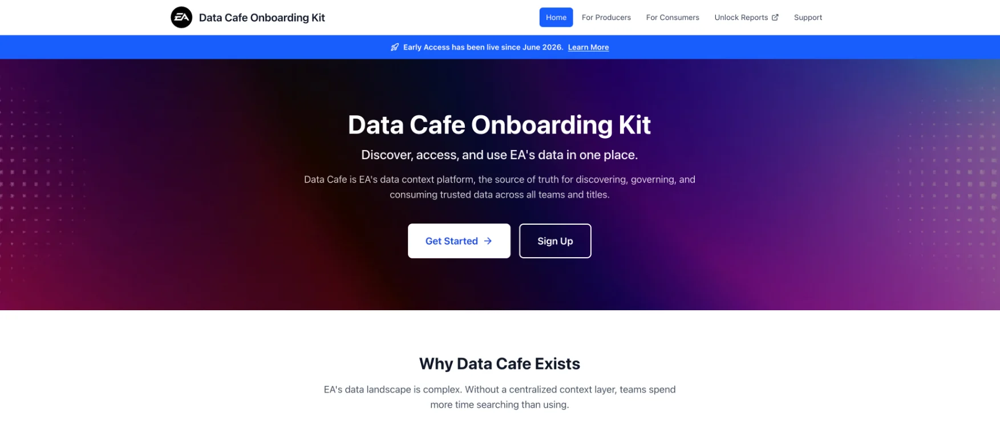
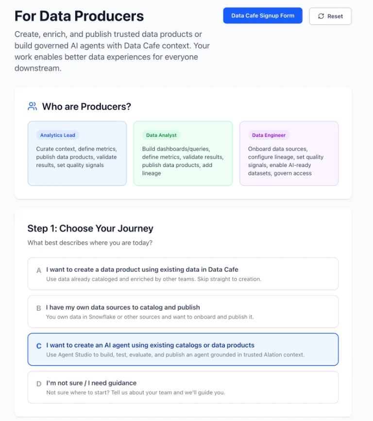
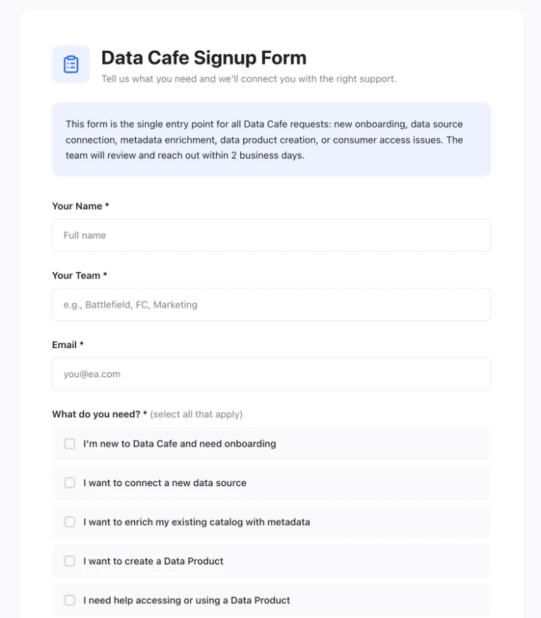
Building the Backstage Without an Engineering Cycle
Rather than wait for a roadmap slot, I designed and built the pipeline myself with lightweight tools, then partnered with our data engineers to harden it.
- Onboarding SiteBuilt in Figma Make
- Enrollment FormOne form for every need
- n8n WebhookParses and routes requests
- Jira TicketAuto-created and tracked
- Slack AlertTeam is notified instantly
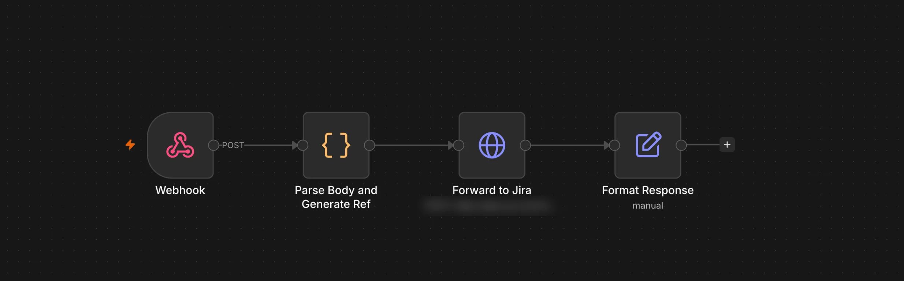
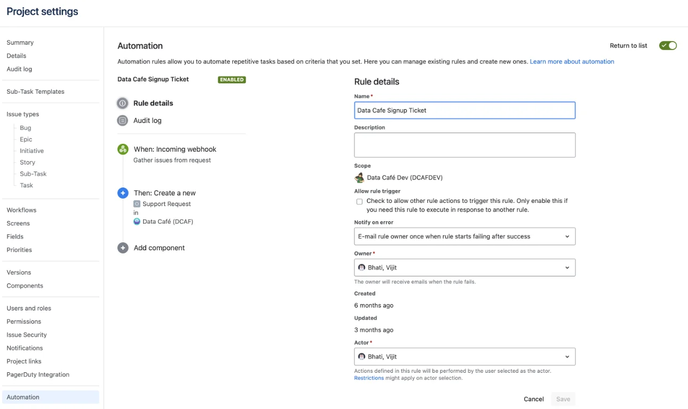
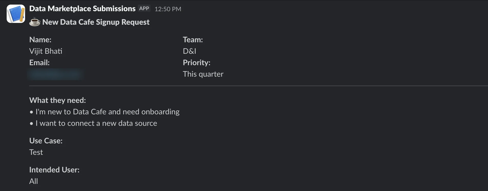
Outcomes & Reflections
Fix the Input, Not Just the Interface: When AI output is bad, the instinct is to redesign the chat. The real leverage was backstage, in the experience of the people creating the data.
Design Systems and Workflows, Not Just Screens: The most useful thing I designed wasn't a page. It was the path a request takes from a form to a ticket to a person.
Meet People Where They Already Work: Busy teams won't adopt a new tool to document their data. Bringing the process into Jira and Slack made good habits the easy default.
EYQ – Enterprise Generative AI Platform
I led the design of a governed AI marketplace that gave consultants a secure, compliant way to harness generative AI—moving the firm from uncontrolled tool sprawl to a unified, auditable platform.
Teams across the firm were quietly adopting external tools like ChatGPT—powerful, but risky. There was no governed way to standardize prompts, share workflows, or even track whether AI outputs were accurate or compliant with our data security policies. We needed to reclaim control.
Rather than build another chatbot, we set out to create a centralized ecosystem. One where consultants could safely use pre-vetted "Skills," developers could publish reusable AI solutions, and admins could maintain complete visibility and compliance. A platform, not just a tool.
Mapping the Ecosystem
I started with research into how the firm actually worked. Three distinct personas emerged, and with them came a critical realization: this wasn't just a design problem—it was a platform architecture problem. We needed to understand each group's motivations and pain points deeply, and design flows that would make sense to all three simultaneously.
Experience Strategy & Concepting
We defined core user journeys around selecting an existing skill, creating a custom skill, and monitoring usage.
Foundations: Wireframes & Systems Thinking
With three personas and competing needs, I mapped out the core workflows early using wireframes. The goal wasn't pixel-perfect design—it was to validate that the platform structure would actually work for all three user groups and that the information architecture made sense.
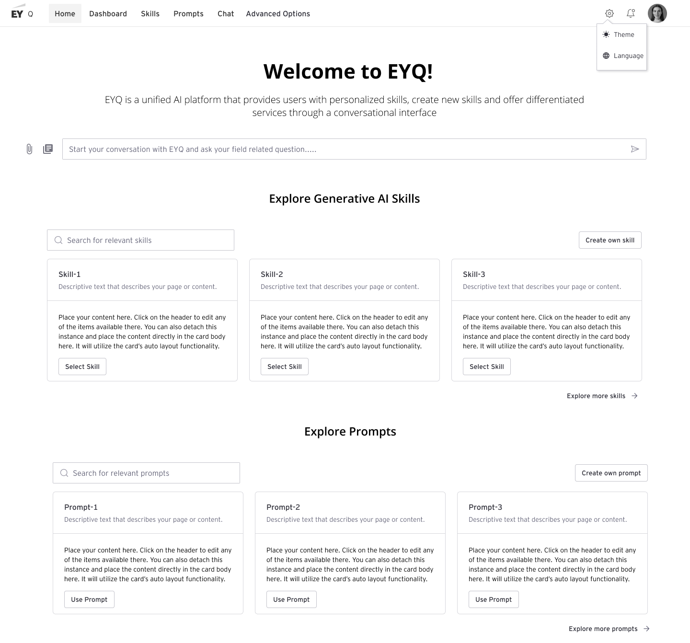
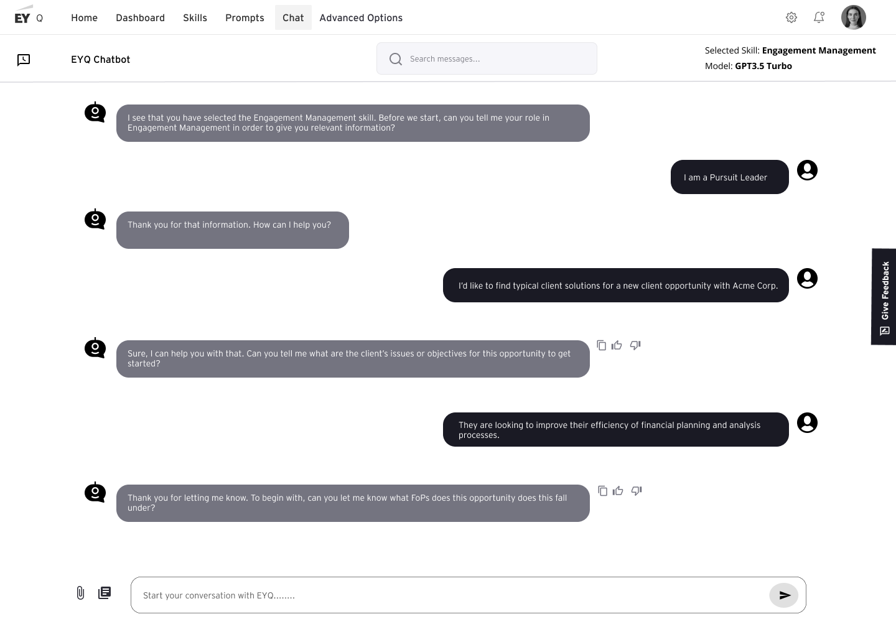
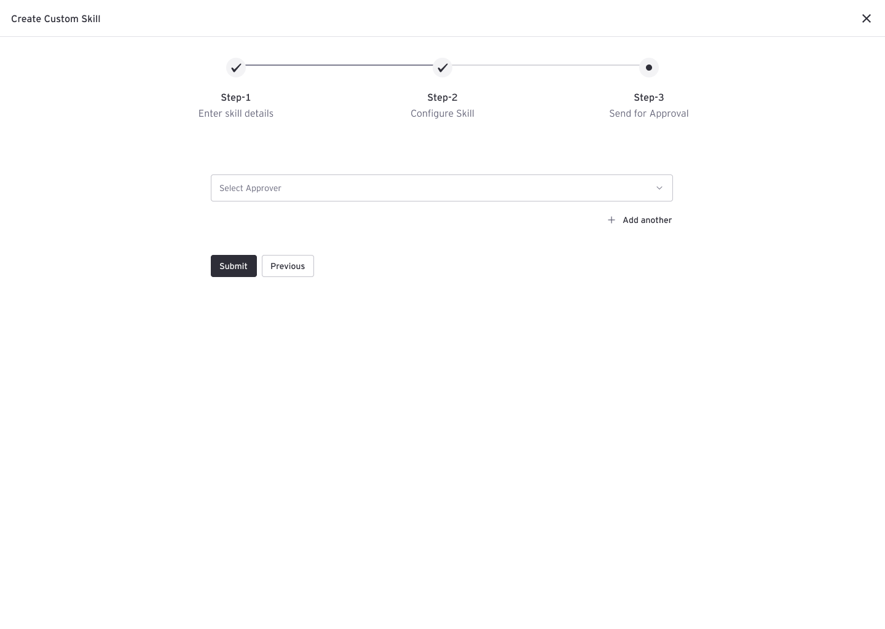
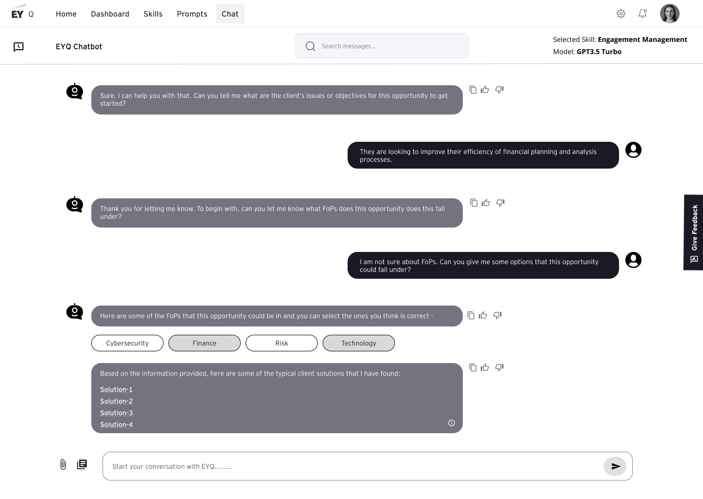
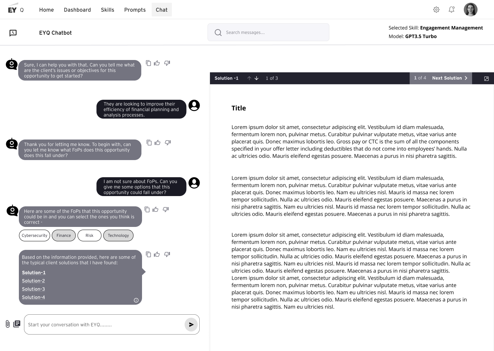

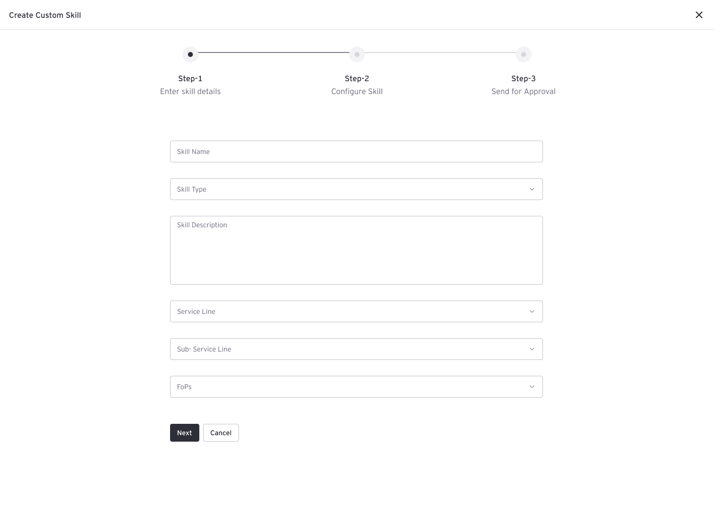
.png)
.png)
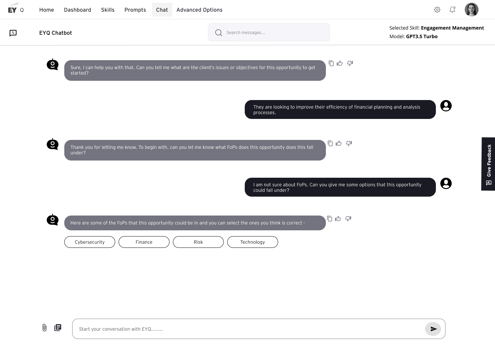
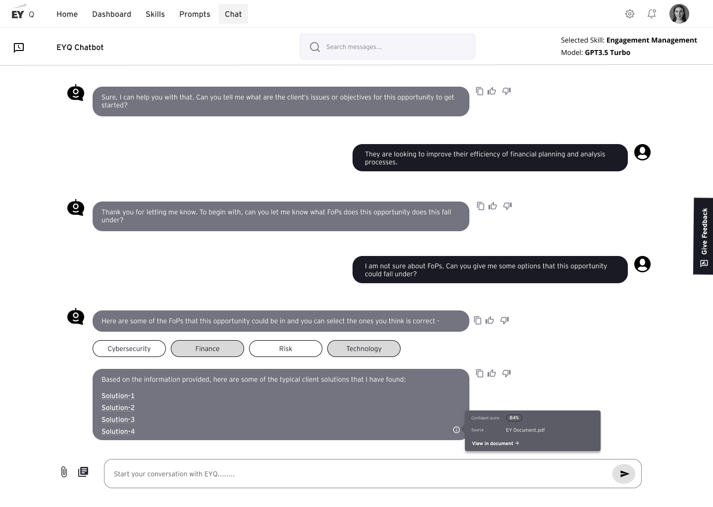
Designing for Adoption: The Practitioner Experience
Client Practitioners—the bulk of our users—needed to feel confident immediately. So we crafted an onboarding experience that made the concept of "Skills" tangible. The welcoming tone mattered. Clear guidance mattered. Because if practitioners didn't understand the value on day one, adoption would stall.
/Get Started.png)
/Landing screen-1.png)
/Discover skill details.png)
Core Interaction: Intelligent Guidance in the Chat
The chat wasn't just a blank box. I designed it to be a guided experience—one that respected users' time and offered immediate, actionable suggestions tailored to the skill they'd chosen. The goal: help them get value faster and avoid the paralysis of a blank input field.
/1.png)
/2.png)
/Service Delivery Assist Skill-1.png)
/Service Delivery Assist Skill-2.png)
Knowledge Sharing: A Prompt Library That Works
We created a shared prompt library—not just as a nice-to-have, but as a core platform feature. The idea was simple: let consultants tap into the collective intelligence of their colleagues. If someone at the firm crafted a killer prompt, everyone else should benefit immediately.
/Prompts.png)
Empowering Developers: A No-Code Path to Impact
The developer experience was tricky. Developers needed to be able to build and publish AI Skills without wrestling with complex infrastructure. I designed a guided form flow that made skill creation feel accessible—turning intricate prompt engineering into intuitive step-by-step workflows. The goal was empowerment, not complexity.
/Skill management-1.png)
/Skill management-2.png)
But I wanted developers to see the impact of their work in real time. So I built out a detailed Skill Analytics dashboard. Real-time accuracy metrics, execution times, and direct user feedback—all visible immediately. This creates a feedback loop where creators can iterate and improve continuously.
/Skill management-21.png)
/Skill management-2-1.png)
Closing the Loop: Admin Visibility & Governance
Admins couldn't govern what they couldn't see. So I built a comprehensive dashboard that gave them complete visibility into the entire EYQ ecosystem. Adoption rates, top-performing skills, response times—all at a glance. And when something went wrong, they needed to drill in. That's where our feedback interface came in.
/Admin.png)
Admins needed to audit user feedback at scale. We built a dedicated feedback interface that made it easy to filter, review, and act on hundreds of user reviews across different countries. Rather than waiting for escalations to bubble up, admins could now be proactive—deprecating failing skills and promoting high performers.
/Feedback.png)
Outcomes & Reflections
Platform Thinking Over Feature Design: The biggest lesson was stepping back from building "features" and thinking like a platform architect. Enterprise adoption hinges on seeing the whole system—how Practitioners, Developers, and Admins all depend on each other.
Balancing Speed With Governance: I had to hold the line on security and compliance without smothering innovation. Some of the best design decisions came from resisting the urge to over-engineer and instead asking: "What's the minimum governance needed?"
Make the Value Visible: Adoption spreads fastest when teams see tangible wins. By making the skill library discoverable and the reuse benefits obvious, practitioners naturally became evangelists. The tool sold itself.
SaaS Contract Analyzer
I designed an AI-assisted contract audit tool that transformed a 4-week manual grind into a 1-week process—by making machine learning invisible and human judgment central.
Our auditors were drowning in contracts—each one 300+ pages—and manually combing through them was sucking weeks of time and thousands in unrealized billable hours every month. The firm had the domain expertise, the historical annotations, and the data. We had everything we needed except the system to leverage it.
We decided to partner machine learning with human judgment. Not to replace auditors, but to amplify them. If we could train a model on past annotations and flag likely problematic clauses, auditors could focus their expertise on validation and nuance. Our goal: reduce audit time from 4-5 weeks down to 1-2 weeks—and actually make the work less painful.
.png)
Discovery: Bringing Everyone to the Table
I facilitated a workshop that got auditors, data scientists, engineers, and product leaders in the same room. The goal wasn't to design in isolation—it was to build shared understanding. What emerged was clarifying: we needed to respect auditors' expertise while introducing ML in a way that felt like an assistant, not a threat.

From Sketch to Reality: Rapid Iteration
After the workshop, I sketched out workflows based on the most compelling stakeholder ideas. The real test came when we walked auditors through low-fidelity prototypes. That feedback was gold—it showed us where the flow broke down and what we fundamentally misunderstood about their process.
%202.png)
Once the team aligned on approach, I moved quickly into high-fidelity using our in-house Motif design system. Two rounds of stakeholder testing later, we were hands-off with developers. I kept syncing weekly though—design problems almost always surface during build.


The ML Reckoning: Handling Imperfection
The model identified financial sections flawlessly—a win. But categorization was messy. Most clauses got lumped into "other," which meant auditors still had to do the hard cognitive work we'd hoped to offload. This was a moment where we had to make a choice: either over-promise the ML capabilities, or be honest and design around the constraint.
We chose honesty. Rather than pretend the model was better than it was, we designed for a human-in-the-loop workflow. Auditors would be gatekeepers, reviewers, and improvers. To build confidence, I designed a power-user beta—six auditors, one month, with dashboards so we could see exactly where the model was failing and then iterate with the data science team.


Outcomes & Reflections
Bring Engineers Early: The best design decisions happened when I stopped designing in isolation and started designing with the engineering and ML teams. Feasibility constraints aren't limits—they're inputs that shape smarter solutions.
Scope Discipline Is Leadership: I watched scope creep threaten the project multiple times. Pushing back on "nice-to-haves" and keeping the team focused on the core problem was some of the most important work I did.
Honesty Around AI Beats Hype: The moment we stopped overselling the ML and started designing around its actual capabilities, adoption took off. Users respected the honesty. They felt like partners, not guinea pigs.
Listing Doctor
I led the design of an error-tracking system that helped Spreetail's quality team escape from spreadsheet hell and take control of their listing health—lifting active listings from 82% to 95% in three months.
Hundreds of products were broken across multiple marketplaces, and every day without fixes was costing Spreetail millions. But here's the thing: the fixes themselves weren't the hard part. The hard part was finding the errors in the first place. Excel dumps from various marketplace APIs arrived in different formats, making it impossible to prioritize or even see the full picture of the damage.
We decided to build visibility and ownership into the system. Not just aggregate errors, but make their financial impact obvious and give the quality team the ability to claim, track, and resolve work at their own pace. Our target: move from 82% active listings to 95% within the fiscal year.

Understanding the Work: Workshops That Unlock
I kicked things off with a hands-on workshop—not just asking what people needed, but getting them to actually sketch out their ideal day, map their workflows, and vote on solutions together. Marketplace Managers, Operations, Vendors, and the Quality Team all brought different perspectives. The synthesis was enlightening.

Fast Iteration: Testing Early, Pivoting Often
With insights fresh, I partnered with the PM to map user journeys and convert everything into low-fidelity wireframes. Then we tested immediately. Those walkthroughs with real users gave us permission to iterate fast—and we needed to. The initial mental model was close, but not quite right.


We ran another round of testing with these changes. The response was immediate. Users felt understood. They felt like the tool was built for them, not against them. Three months after launch to the full team, we crushed our targets.

The Beta Surprise: When Users Teach You Why You're Wrong
We launched to eight beta users feeling confident. They loved the interface. Clear error messaging, simple workflow. And then they asked for something that made me rethink the entire approach: they wanted to download error lists into Excel. At first, I resisted. But I listened instead, and here's what I learned: their existing mental model was deeply rooted in the tools they already used. Fighting that was futile.


Outcomes & Reflections
After another series of user testing, Listing Doctor was successfully launched to the entire user base! Within the first 3 months, the listing quality team saw an increase in their productivity, allowing them to meet their quarterly metric goals of resolved listing errors.
Reduce Friction Against Existing Mental Models: I learned the hard way that fighting entrenched workflows is usually a losing battle. Instead, I embraced item-number search and export capabilities—minor additions that created massive adoption.
Make the Stakes Visible: The turning point came when we added financial impact to every error. Suddenly, the work wasn't abstract.—people could see exactly how much their effort mattered. Motivation shifted entirely.
Sometimes the Best Users Are Teachers: Beta users told us we were wrong, but in a way that helped us build something better. Listening without defensiveness is a superpower in product design.